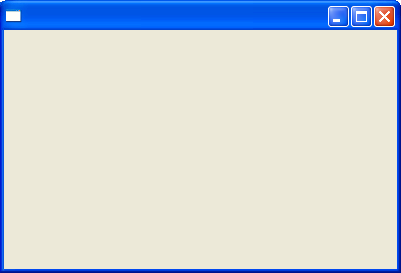

| Eclipse Article |

The Rich Client Platform (RCP) is an exciting new way to build Java applications that can compete with native applications on any platform. This tutorial is designed to get you started building RCP applications quickly.
By Ed Burnette, SAS
July 28, 2004
Try this experiment: Show Eclipse to some friends or co-workers who haven't seen it before and ask them to guess what language it is written in. Chances are, they'll guess VB, C++, or C#, because those languages are used most often for high quality client side applications. Then watch the look on their faces when you tell them it was created in Java, especially if they are Java programmers.
Because of its unique open source license, you can use the technologies that went into Eclipse to create your own commercial quality programs With previous version of Eclipse, this was possible but difficult, especially when you wanted to heavily customize the menus, layouts, and other user interface elements. That was because the "IDE-ness" of Eclipse was hard-wired into it. Version 3 introduces the Rich Client Platform, which is basically a refactoring of the fundamental parts of Eclipse's UI, allowing it to be used for non-IDE applications.
If you want to cut to the chase and look at the code for this part you can use Eclipse's built-in CVS client to download the source code to your workspace. Otherwise, let's take a look at how to construct an RCP application.
RCP applications are based on the familiar Eclipse plug-in architecture, (if it's not familiar to you, see the references section). Therefore, you'll need to create a plug-in to be your main program. Select New > Project > Plug-in Development > Plug-in Project to bring up the Plug-in Project wizard. On the subsequent pages, enter a Project name such as org.eclipse.ui.tutorials.rcp.part1, indicate you want a Java project, and enter a Plug-in Id (this should match the project name).
Don't select the Alternate Format option that says Create an OSGi bundle manifest for the plug-in. See the section on Compatibility and migration for more details.
The generated plug-in class that you may be familiar with in previous releases is no longer required in Eclipse 3.0. You can still have one to hold global data if you like, but for this example just remove it altogether to save a little space. To do this, turn off the option that says Generate the Java class that controls the plug-ins life cycle. Then Click on Finish to generate the template. If you get a dialog asking if Eclipse can switch to the Plug-in Development Perspective click Yes (this is optional).
The plug-in manifest, plugin.xml, ties all the code and resources together.
When you first create a plug-in, Eclipse will edit the manifest for you
automatically.
You need to define the class name of the main program
with the org.eclipse.core.runtime.applications extension
and the perspective with org.eclipse.ui.perspectives.
To add these extensions use the Add button on the Extensions tab,
or just type in the XML in the plugin.xml tab.
Also, you need to tell Eclipse that the plug-in will depend on two other Eclipse plugins,
org.eclipse.core.runtime and
org.eclipse.ui, so those need to be added to the
Dependencies tab or in the XML.
While you're editing it you can change the version number,
provider name, and other options to your liking.
When you're done your plugin.xml should look something like listing 1.
The classes refered to here will be defined in the next section
and the tags starting with percents (%) will be defined later in plugin.properties.
Listing 1. plugin.xml
<?xml version="1.0" encoding="UTF-8"?>
<?eclipse version="3.0"?>
<plugin
id="org.eclipse.ui.tutorials.rcp.part1"
name="%pluginName"
version="0.0.0"
provider-name="%providerName">
<runtime>
<library name="part1.jar">
<export name="*"/>
</library>
</runtime>
<requires>
<import plugin="org.eclipse.core.runtime"/>
<import plugin="org.eclipse.ui"/>
</requires>
<extension
id="RcpApplication"
point="org.eclipse.core.runtime.applications">
<application>
<run
class="org.eclipse.ui.tutorials.rcp.part1.RcpApplication">
</run>
</application>
</extension>
<extension
point="org.eclipse.ui.perspectives">
<perspective
name="%perspectiveName"
class="org.eclipse.ui.tutorials.rcp.part1.RcpPerspective"
id="org.eclipse.ui.tutorials.rcp.part1.RcpPerspective">
</perspective>
</extension>
</plugin>
Although it's not an absolute requirement,
I recommend keeping your id's and your class names the same.
For example, org.eclipse.ui.tutorials.rcp.part1.RcpApplication
is both the fully qualified id for the application and the class name of the
main program.
For historical reasons, Eclipse prepends the plug-in's id to the id of your
top level plug-in elements (like extension) so even though
plugin.xml says id="RcpApplication" the fully qualified id
for that extension is org.eclipse.ui.tutorials.rcp.part1.RcpApplication.
Since the perspective's id is written on a sub-element
(perspective) it has to be spelled out completely
in the manifest
(org.eclipse.ui.tutorials.rcp.part1.RcpPerspective).
The org.eclipse.core.runtime.applications extension tells
the Eclipse runtime the name of your main program.
Create a new Java class with that name,
make it implement IPlatformRunnable,
and put your program code in the run() method.
Listing 2 shows a simple implementation with the minimum you have to do.
The RcpWorkbenchAdvisor class will be defined shortly.
Listing 2. RcpApplication class
package org.eclipse.ui.tutorials.rcp.part1;
import org.eclipse.core.runtime.IPlatformRunnable;
import org.eclipse.swt.widgets.Display;
import org.eclipse.ui.PlatformUI;
import org.eclipse.ui.application.WorkbenchAdvisor;
public class RcpApplication implements IPlatformRunnable {
public Object run(Object args) {
WorkbenchAdvisor workbenchAdvisor = new RcpWorkbenchAdvisor();
Display display = PlatformUI.createDisplay();
try {
int returnCode = PlatformUI.createAndRunWorkbench(display,
workbenchAdvisor);
if (returnCode == PlatformUI.RETURN_RESTART) {
return IPlatformRunnable.EXIT_RESTART;
} else {
return IPlatformRunnable.EXIT_OK;
}
} finally {
display.dispose();
}
}
}
Next, you must define at least one perspective and make it the default.
Perspectives are created by implementing IPerspectiveFactory
using the class name referred to by the org.eclipse.ui.perspectives extension
(see listing 3).
The important part
of this interface is the createInitialLayout() method where you position and
open any views and/or editors you'd like the user to start with.
In this example
we're not going to create any views so it will be a pretty boring perspective.
Listing 3. RcpPerspective class
package org.eclipse.ui.tutorials.rcp.part1;
import org.eclipse.ui.IPageLayout;
import org.eclipse.ui.IPerspectiveFactory;
public class RcpPerspective implements IPerspectiveFactory {
public RcpPerspective() {
}
public void createInitialLayout(IPageLayout layout) {
}
}
The Workbench Advisor class, which you referred to in the main program, helps customize the workbench to add and subtract toolbars, perspectives, and so forth. This will covered in more detail in part 2 of the tutorial. For now, the absolute minimum you have to do here is define which perspective is the default one. See listing 4 for the code.
Listing 4. RcpWorkbenchAdvisor class
package org.eclipse.ui.tutorials.rcp.part1;
import org.eclipse.ui.application.WorkbenchAdvisor;
public class RcpWorkbenchAdvisor extends WorkbenchAdvisor {
public String getInitialWindowPerspectiveId() {
return "org.eclipse.ui.tutorials.rcp.part1.RcpPerspective";
}
}
The build.properties file (see listing 5) will be needed when exporting the application for others to use.
Listing 5. build.properties
bin.includes = plugin.xml,\
*.jar,\
part1.jar,\
plugin.properties
source.part1.jar = src/
Finally, you need to create a plugin.properties file (listing 6) for any natural language strings at the plug-in registry level (i.e., things the run-time has to know about your plug-in before even loading it). You could hard-code these into your plug-in manifest but it's best to get into the i18n habit from the start.
Listing 6. plugin.properties
pluginName = RcpTutorial1 Plug-in providerName = Eclipse.org perspectiveName = RcpTutorial1
To test and debug this plug-in, select Run >
Debug..., select Run-time Workbench,
then click New to create a new configuration.
In the Arguments tab, select
org.eclipse.ui.tutorials.rcp.part1.RcpApplication
for the name of the application to run.
This comes from the id specified on the
org.eclipse.core.runtime.applications extension point
(in this example, RcpApplication), prepended with the
plug-in id (org.eclipse.ui.tutorials.rcp.part1).
Now switch over to the Plug-ins tab.
Select the option to
Choose plug-ins and fragments to launch from the list.
We want the smallest possible set of plug-ins involved
in your program so click on Deselect All,
scroll down and place a checkmark next to your plug-in
(org.eclipse.ui.tutorials.rcp.part1),
and click Add Required Plug-ins.
Then click on Debug and
you should see a bare-bones Workbench start up (see figure 1).
Your window will probably be bigger than this; we'll see in
part 2 of the tutorial how to control that.
Figure 1. World's simplest RCP application.
If you don't see this, you should be able to find an error message in the
run-time workbench's log file.
This file is in different places for different releases but
as of this writing can be found in ./configuration/nnnnn.log
where nnnnn is a long random number. Simply bring
it up in a text editor and look for the most recent errors. You may find it
useful to delete the log files before running the program so you won't get
confused by older messages.
 Specify the
Specify the -consoleLog option
in the Arguments tab under Program Arguments (in the launch configuration)
to have all error messages sent to the Console.
This is easier than searching around for the log file.
The whole point of all this is to be able to run stand-alone applications without the user having to know anything about the Java and Eclipse code being used under the covers. For a real application you will probably want to provide a self-contained executable generated by an install program like InstallShield. That's really beyond the scope of this article though, so we'll do something simpler.
We need to create a simplified version of the Eclipse install directory because the Eclipse plug-in loader expects things to be in a certain layout. Here are the steps to get started:
To complete the RcpTutorial1 directory, copy the startup.jar file from the Eclipse install directory into the top level, and copy all the org.eclipse plug-ins that are required into the plugins directory.
Which plug-ins are required, you ask?
Earlier, when you created a launch configuration to debug
the RCP application you clicked on
the Add Required Plug-ins button.
Simply open the launch configuration again to see the list.
Copy all the plug-ins that are checked off there.
In addition, you need to copy the
org.eclipse.update.configurator
plug-in if you want automatic discovery of plug-ins at runtime
(which we do).
Unfortunately, as of this writing there is no automatic way to do this so you need to do the copies by hand. This process is error prone and a never-ending source of frustration to RCP developers. See the troubleshooting section for some helpful advice. Hopefully a future version of Eclipse will provide better support for this.
When you're done you should have a structure that looks like this:
RcpTutorial1
| startup.jar
+--- plugins
+--- org.eclipse.core.expressions_3.0.0
+--- org.eclipse.core.runtime_3.0.0
+--- org.eclipse.help_3.0.0
+--- org.eclipse.jface_3.0.0
+--- org.eclipse.osgi_3.0.0
+--- org.eclipse.swt.win32_3.0.0
+--- org.eclipse.swt_3.0.0
+--- org.eclipse.ui.tutorials.rcp.part1_0.0.0
+--- org.eclipse.ui.workbench_3.0.0
+--- org.eclipse.ui_3.0.0
+--- org.eclipse.update.configurator_3.0.0
That's all you need to run an RCP application, but it would be difficult for anyone to use it without some kind of launching program. Eclipse uses eclipse.exe, but for this example we'll just use a batch file. On Windows, create a command file called rcptutorial1.cmd and place it in the top level RcpTutorial1 directory.
echo on
setlocal
cd %~dp0
start javaw -cp startup.jar org.eclipse.core.launcher.Main
-application org.eclipse.ui.tutorials.rcp.part1.RcpApplication %*
endlocal
The start command should be all on one line. As before, the -application
option refers back to the id specified on the
org.eclipse.core.runtime.applications extension point.
 Specify the
Specify the -clean option
on the command line to cause the core runtime to discard its caches
and re-read all the plug-in manifests.
Normally, Eclipse caches manifest information to speed startup,
but if you are adding and removing plug-ins or changing configuration
options the cache may get out of sync.
Remove -clean for best performance in production applications.
The Linux shell version is similar, but for some reason you have to add a few extra options to identify the operating and window system. I can't verify this because I don't have a Linux system but this command line is reported to work:
java -cp startup.jar org.eclipse.core.launcher.Main
-application org.eclipse.ui.tutorials.rcp.part1.RcpApplication
-os linux -ws gtk -arch x86 -nl en_US $*
To run it under Mac OS, you must use the java_swt executable that comes with the Eclipse SDK instead of the regular java executable that comes with the Java SDK.
You can get as fancy as you want in this script file. Here's a variant that I like to use when debugging because it will display any error messages from the Eclipse loader in a separate window. This is for Windows; the Linux version would be similar.
echo on
setlocal
cd %~dp0
java -cp startup.jar org.eclipse.core.launcher.Main
-application org.eclipse.ui.tutorials.rcp.part1.RcpApplication
-consoleLog %* || pause
endlocal
The java command should be all on one line.
To eliminate the startup window on Windows, you can use a shortcut instead of a script file. Right click inside the RcpTutorial1 folder, select New > Shortcut and enter this as the location of the item (on one line):
%windir%\system32\javaw.exe -cp startup.jar org.eclipse.core.launcher.Main
-application org.eclipse.ui.tutorials.rcp.part1.RcpApplication
Enter a descriptive name on the next page and then press Finish. Then try double-clicking on your new shortcut to try it out. You may want to edit the shortcut (right click on it and select Properties) to change the default working directory. All these files can be found in the example project.
For fully branding a program with a splash screen, custom icons, and so forth you'll need to set up some configuration files and use the eclipse.exe launcher. See the online help under Platform Plug-in Developer Guide > Programmer's Guide > Packaging and delivering Eclipse based products for more information.
After I wrote this tutorial I started getting mail from people who couldn't
run it for one reason or another.
This section will collect the errors that they've seen and
the solutions.
Remember to use the -consoleLog command line option to see
extra diagnostics in the console window where you invoked your
RCP application,
and -clean to purge the core runtime's cache of any stale
information when changing plug-ins and configurations.
org.eclipse.core.runtime.applications extension.
This message might also be printed if all the required
plug-ins are not available at run-time.
Check the log for additional error messages that may identify the
specific plug-ins that are missing.
-console command line option.
This will allow you to enter OSGi console commands to diagnose the problem.
After the error occurs again, go to the console window and enter the
ss command.
You'll see one or more plug-ins (bundles) which were installed but not resolved.
Pick one of them (in the above message it would be number 13), and enter the
diag nnn command, where nnn
is the bundle number. For example, "diag 13".
This will tell you what the missing bundle is.
Note that you can't run OSGi commands if the program has already terminated.
| Compiler compliance level: | 1.4 |
| Use default compliance settings: | off |
| Generated .class files compatibility: | 1.4 |
| Source compatibility: | 1.4 |
| Disallow identifiers called 'assert': | Error |
org.eclipse.update.configurator.
The update configurator is responsible for scanning the plugins directory to
discover what plug-ins are available.
Without it, you have to list them out manually in a configuration file
(config.ini).
Unfortunately this plug-in is not part of the standard
RCP SDK, so you have to copy it from the regular Eclipse SDK.
-os linux -ws gtk.
When running under Mac OS, you need to use the java_swt program that came with
the Eclipse SDK instead of the normal java program.
Astute readers will notice a new 3.0 version comment in plugin.xml and a few references in Eclipse wizards and documentation to OSGi and an optional manifest file called MANIFEST.MF. What's all that about? For the most part this is transparent and RCP developers don't have to worry about it. But just in case, let's take a few moments to discuss these changes from Eclipse 2.1.
The 3.0 tag in plugin.xml
(<?eclipse version="3.0"?>)
says whether or not the plugin.xml itself is in 3.0 form.
For Eclipse 3.0 there were various changes to the plugins
(code moved, new plugins, etc.) and various extension points moved.
The presence of the 3.0 tag tells the runtime that it does not
need to do any "munging" of the plugin.xml to map the old
form/names onto the new form/names.
If you need to convert a version 2.1 plug-in to 3.0, we suggest you
use the PDE 3.0 migration wizard instead of doing it manually.
To run it from the Package Explorer, right click on plugin.xml
and select PDE Tools > Migrate to 3.0.
After you do this the plug-in will not function in earlier
versions of Eclipse.
The tool does all the munging to use a compatibility layer
(org.eclipse.core.runtime.compatibility),
updates your classpaths, and so forth.
Later you can consult the Eclipse 3.0 Plug-in Migration Guide
(see the references or online help)
for assistance in converting any deprecated API calls.
After all the old calls have been removed you can replace
the compatibility layer with the regular runtime code
(org.eclipse.core.runtime).
Finally, Eclipse 3.0 introduced a new run-time system based on OSGi standards that uses bundles and a new manifest file (MANIFEST.MF) to implement plug-ins. The use of MANIFEST.MF, in normal circumstances, is completely optional. You will notice that almost all of the 3.0 SDK plug-ins do NOT have one yet all are marked as 3.0 and many do not require the compatibility layer. The only reason you would want to have a MANIFEST.MF is if you need to use a particular OSGi capability that is not exposed through plugin.xml (for example, import-package). Otherwise it's recommended at this time that you don't have one.
In part 1 of this tutorial, we looked at what is necessary to create a bare-bones Rich Client application. The next part will delve into customizations using the WorkbenchAdvisor class. All the sample code for this part may be viewed at the Eclipse project here. You can use Eclipse's built-in CVS client to download the source to your workspace.
IBM is trademark of International Business Machines Corporation in the United States, other countries, or both.
Java and all Java-based trademarks and logos are trademarks or registered trademarks of Sun Microsystems, Inc. in the United States, other countries, or both.
Microsoft and Windows are trademarks of Microsoft Corporation in the United States, other countries, or both.
Other company, product, and service names may be trademarks or service marks of others.